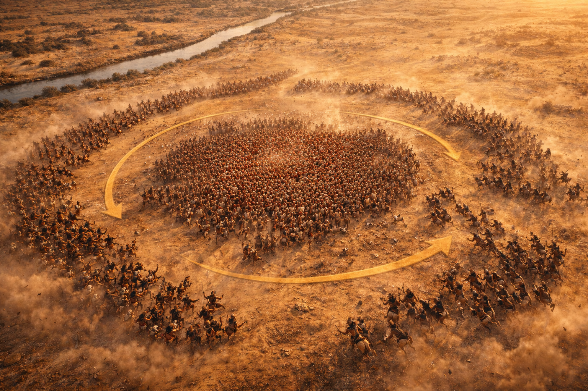
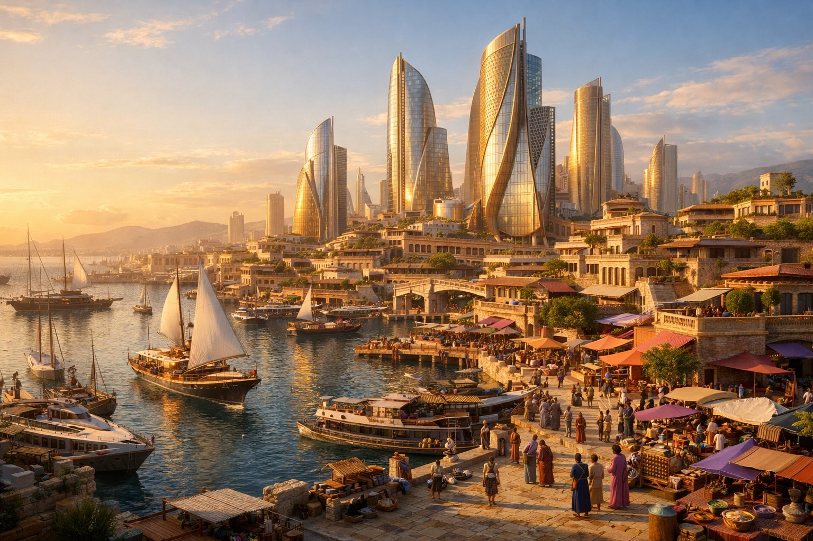
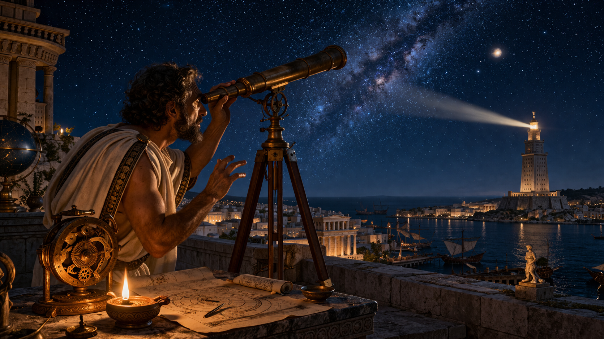
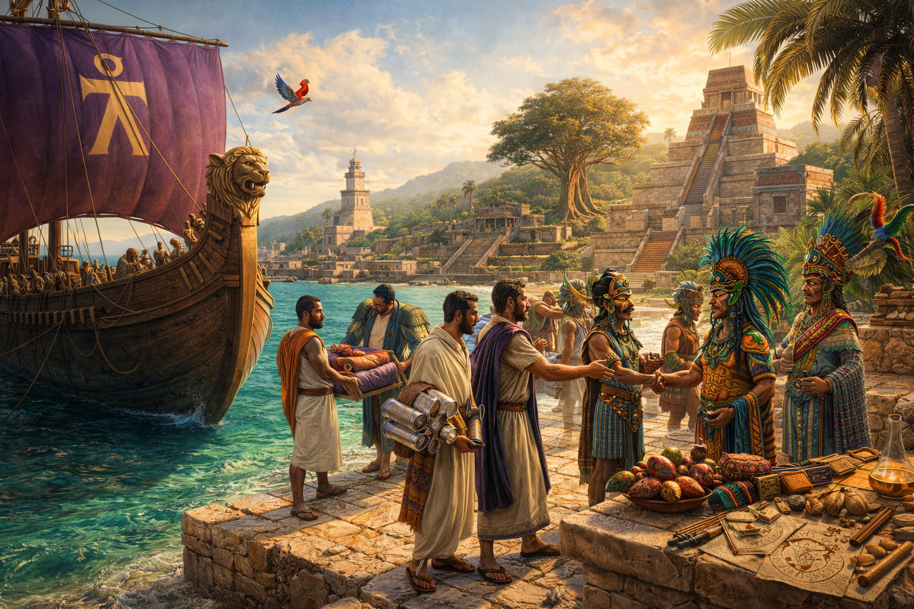

A Note on Method and Confidence
Tiers of Confidence
Documented events, primary source accounts, and archaeological evidence. These are facts about the world as it was — the foundation on which the counterfactual is built.
Downstream consequences that follow reasonably from the branching assumption. These require that you accept the initial premise (Hannibal secures favorable terms after Cannae), after which they follow from documented tendencies, institutional structures, and known trajectories.
Projections that compound multiple layers of assumption. They are included where they illuminate the direction of change, not its specific form. The further we go from 216 BCE, the wider the cone of uncertainty becomes. Honesty about that uncertainty is part of the exercise.
Counterfactual history is not prophecy. It is a method for testing how much of what we take for granted was contingent — and what might have been otherwise. The goal is not to prove that Carthage was morally superior to Rome, but to show that the world we inherited was not the only world possible.
The Battle, the Decision, and Fourteen Lost Years
Livy, Ab Urbe Condita XXII; Polybius, Histories III–XV; the Macedonian Treaty of 215 BCE (Polybius 7.9); Goldsworthy, The Fall of Carthage (2003); Hoyos, Hannibal's Dynasty (2003).
August 2, 216 BCE
By Cannae, Hannibal had already destroyed Roman armies at the Trebia (218 BCE) and Lake Trasimene (217 BCE). Rome responded with the largest army it had ever fielded: approximately 86,000 men under two consuls, with a mandate to destroy the invader.
What followed was an annihilation. Between 47,700 and 70,000 Romans died; another 19,300 were captured. Hannibal lost under 8,000. Within three campaign seasons, Rome had lost roughly a fifth of its adult male citizen population. The Senate banned the word "peace." Capua, Tarentum, and most of southern Italy defected. Philip V of Macedon opened negotiations. The Italian confederation was fracturing.
"By almost any reckoning, Hannibal had won the war. Rome's power base had been reduced to central Italy and Sicily. Its allies were abandoning it, and rival powers were beginning to line up behind Hannibal."
— Dickinson College Commentaries, The Second Punic War
Maharbal's Rebuke
According to Livy (XXII.51), Maharbal — Hannibal's cavalry commander and one of his most aggressive subordinates — urged an immediate advance on Rome after Cannae. When Hannibal demurred, Maharbal replied: "You know how to gain a victory; you do not know how to use it." Modern historians treat the quote with skepticism — Livy wrote 150 years later with strong pro-Roman sympathies — but the strategic question it raises is real.
The Competing Explanations
- LogisticalRome was 250 miles away; his army was exhausted, without siege equipment. Delbrück argued the march "would have been a fruitless demonstration."
- PoliticalCarthage's senate, led by Hanno II, had been denying Hannibal reinforcements and siege equipment since the war began. He couldn't besiege Rome because his own government left him half-supplied.
- StrategicHe may never have intended to destroy Rome — only to compel a negotiated peace. His 215 BCE treaty with Philip V explicitly limits Roman sovereignty to "their domain around the Tiber": containment, not annihilation.
- CulturalHe underestimated Roman will. Under ancient conventions, any state suffering Cannae's losses was expected to negotiate. Rome's political identity was uniquely organized around the refusal to admit defeat.
The Longest, Most Tragic Campaign in Ancient History
Hannibal remained in Italy until 203 BCE, never defeated in open battle on Italian soil. Yet Rome would not break. The war ended not because Rome beat Hannibal in Italy, but because Scipio Africanus carried the war to Africa, forcing Hannibal's recall. At Zama in 202 BCE, fighting with green levies, he lost.
The counterfactual hinge: We do not require Hannibal to become a different person. We require only a convergence of circumstances — Carthage's senate sends siege equipment; or Maharbal's cavalry screens the march before Rome recovers its nerve; or Hannibal presses for the negotiated peace he actually wanted, before Rome rebuilds. In this simulation, those stars align.
The Branching Point — August 216 BCE
Hannibal waits. Rome recovers. Scipio wins at Zama (202 BCE). Carthage razed (146 BCE). All Carthaginian libraries destroyed. The world proceeds on Roman rails.
Hannibal secures favorable terms within months of Cannae. A treaty restores Carthaginian Sicily, Sardinia, and Iberian sovereignty. Rome survives as a regional power. Everything that follows is different.

The trap closes
Cannae · August 2, 216 BCEScipio Africanus: Rome's First Celebrity — and Why Zama Was Won Before It Was Fought
Rome's First Rock Star
Scipio was present at Cannae at approximately twenty — one of the few Roman officers to escape alive. The traditional narrative casts what followed as a military education: the young survivor studying his enemy's methods, then surpassing them. The reality, as Patrick N. Hunt argues in Hannibal, is more complicated. What Scipio truly mastered was not Hannibal's tactics but something no Roman had attempted before: the cultivation of personal political celebrity.
Robert O'Connell, in The Ghosts of Cannae, calls Scipio what he was: "the self-promoting Roman military tribune." Where O'Connell describes Hannibal as "resolutely sane and uncannily strategic," Scipio gets a different adjective entirely. He claimed Jupiter spoke to him directly. He made dramatic, conspicuous visits to temples before battles. He cultivated a quasi-divine public image that scandalized the Roman Senate — whose entire system was designed to prevent exactly this kind of personal power. Scipio was less a military innovator than he was Rome's first populist politician with an army: a man who understood that in a republic shaken to its foundations by Hannibal, the person who looked like a savior could become one.
The War Was Won by Diplomacy, Not Tactics
Hannibal's most powerful asset was Numidian cavalry — the finest light horse in the ancient world. For fifteen years, they had been the jaw that closed every trap: Trebia, Trasimene, Cannae. Scipio's single most consequential act was not a battlefield maneuver but a diplomatic one: flipping the Numidian prince Masinissa to Rome's side.
Masinissa had been betrothed to Sophonisba, the daughter of the Carthaginian general Hasdrubal Gisco. When political chaos reshuffled the betrothal, Scipio courted the humiliated prince for years, offering him what Carthage would not: a guaranteed kingdom. This was alliance-building, not generalship. As O'Connell puts it plainly: the Scipio-Masinissa alliance "sealed Carthage's fate." Not a battle plan — an alliance.
A Battle Hannibal Was Designed to Lose
At Zama in 202 BCE, Hannibal was not the Hannibal of Cannae. He commanded an army of raw Carthaginian conscripts — not the veteran multinational force he had led for sixteen years. His war elephants were barely trained and stampeded into his own lines at the start of the battle. And critically, he had no cavalry screen, because the Numidians who had closed the trap at Cannae were now wearing Roman insignia.
Masinissa's horsemen drove Hannibal's flanks from the field, then returned and hammered the Carthaginian infantry from behind — the same hammer-and-anvil that Hannibal had used at Cannae, now executed against its inventor. But the architect of this reversal was not Scipio's tactical mind; it was his political courtship of a single Numidian prince. Strip away Masinissa, and Scipio likely loses Zama. The "brilliant Roman general defeats Hannibal" narrative is really: a brilliant Roman politician stole Hannibal's allies and fought him at his weakest.
"Hannibal lost the war, but he induced an archetype of a character that could beat him — and later challenge the power of the Senate."
— O'Connell, The Ghosts of Cannae (2010)
Years after the war, Livy records that Scipio met the exiled Hannibal at Ephesus and asked him to name history's greatest commanders. Hannibal said: Alexander first, Pyrrhus second, himself third. And had he won at Zama? Above all others — before Alexander, before everyone. Even in defeat, Hannibal understood something Scipio may not have: that Zama was not a fair test of generalship. It was the result of a war of attrition won by the side with deeper political resources — against a general whose own government had spent sixteen years refusing to support him.
How Hannibal Destroyed Rome After All
O'Connell makes a remarkable argument in The Ghosts of Cannae: Hannibal may have ultimately destroyed Rome — not on the battlefield, but by forcing it to create Scipio. Before Hannibal, Rome's system was designed to prevent any single man from accumulating too much military power. Consuls rotated annually. Armies were loyal to the Senate, not to individuals. The system was inefficient but safe.
Hannibal broke that system by being too good. After years of watching elected politicians lead legions to slaughter, Rome was forced to do what it had always feared: hand an army to a charismatic, self-promoting young commander and let him wage war on his own terms. Scipio became the template for a new kind of Roman — the general whose soldiers followed him, not the Republic. After Scipio came Marius, then Sulla, then Pompey, then Caesar. Each one crossed a line the previous one had drawn. The last one crossed the Rubicon.
In this reading, Cannae didn't just kill 70,000 Romans in an afternoon. It set in motion the chain of events that killed the Roman Republic itself — and replaced it with the autocracy of the Caesars. Hannibal's greatest victory was the one he never knew he'd won.
What Carthage Actually Was
Almost everything we "know" about Carthage comes from its enemies. The 2025 Nature study (Ringbauer et al., Max Planck / Harvard) — the largest ancient DNA analysis of Punic populations ever conducted — fundamentally reframes the Punic world at its biological core.
Aristotle's Favorite Non-Greek Constitution
Aristotle — writing before the Punic Wars with no axe to grind — praised the Carthaginian constitution in his Politics (1272b–1273b25) as one of the finest known: a mixed constitution blending monarchic, aristocratic, and democratic elements. Two annually elected suffetes, a Senate, a Council of 104, and a popular assembly contained genuine checks on concentrated power. Polybius observed that Carthaginian citizens held more sway over their government than Romans did over theirs.
A Mediterranean Highway, Not an Empire
The 2025 Nature study found that Punic people had almost no Levantine ancestors — despite practicing Phoenician culture, language, and religion. Their ancestry derived primarily from Sicily, the Aegean, and North Africa, reflecting "a regular influx of diverse people connected by a Mediterranean highway maintained by trade." Researchers found second cousins buried at sites on opposite ends of the Mediterranean: families scattered across the sea, connected by commerce rather than territory.
Phoenician culture spread not through conquest or mass migration, but through voluntary adoption. People joined the network because it was worth joining. This is a structurally different model from Rome, which spread through military subjugation.
Hanno the Navigator
Hanno the Navigator reached the West African coast — possibly as far as Cameroon or Gabon — around 500 BCE. His Periplus, the only surviving specimen of Carthaginian literature, records volcanic coastlines, gorillas, and tropical rivers. Pliny reports that gorilla skins from the expedition were displayed in Carthage's temple of Tanit until the Romans destroyed the city. This feat would not be repeated until Portugal in the 15th century — nearly 2,000 years later.
"The superiority of their constitution is proved by the fact that the common people remain loyal to it."
— Aristotle, Politics (c. 340 BCE)

The world that might have been
Alternate Carthage · Artistic RenderingThe Punic Settlement and the Scientific Thread
The Revolution That Might Never Have Been Suppressed
Lucio Russo, in The Forgotten Revolution (2004), argues that the Hellenistic period produced a genuine scientific revolution — heliocentric models, mathematical mechanics, hydraulics — which decayed after Roman conquest. His claim that Galileo-level discoveries might have come "at least a thousand years earlier" with unbroken development is contested, but the underlying observation is well-documented: Roman intellectual culture was less hospitable to theoretical science than the Hellenistic world it absorbed.
Aristarchus proposed heliocentrism by 270 BCE. Archimedes — who sided with Carthage and was killed by a Roman soldier at Syracuse in 212 BCE — had developed calculus-precursor mathematics and mechanical computing. The Antikythera mechanism (~87 BCE) used differential gearing not seen again in Europe until the 14th century.
In this simulation, these traditions are not disrupted by Roman conquest. The acceleration they produce is debatable; that they represent a real loss is not.
The Theological Landscape Without Universal Empire
Christianity is, at its institutional core, a Roman phenomenon. But the argument goes deeper than organization: the historical Jesus himself was a product of Roman occupation. The specific conditions that produced messianic Judaism in 1st-century Palestine — Roman taxation crushing small landholders, Roman-appointed client kings generating political resentment, Roman military occupation fueling apocalyptic expectation of divine deliverance, Roman crucifixion providing the martyrdom mechanism — were all consequences of Rome's eastern expansion. Without a Roman empire, Judea likely remains under Ptolemaic or Seleucid influence, or possibly achieves independence earlier. There is no Roman census forcing a journey to Bethlehem. No Pontius Pilate. No crucifixion. No Roman roads for Paul of Tarsus to travel, no Roman legal framework protecting his citizenship, no Roman imperial infrastructure for the early Church to spread through. A person named Yeshua may still be born in Galilee — but the specific pressures that turned a regional Jewish reform movement into a world religion simply do not assemble. No Council of Nicaea. No Catholic Church. No papal authority. No canon law.
The downstream consequences are enormous. Islam emerges in the 7th century in explicit theological dialogue with Christianity and Judaism — the Quran references Jesus, Mary, Moses, and Abraham extensively. Muhammad's revelation took its specific shape within the pressure cooker of Byzantine-Sassanid warfare, Nestorian Christian communities in Arabia, and Jewish tribal politics in the Hejaz. Without Christianity as a dominant regional force, without the Byzantine empire as a theological and military antagonist, the specific conditions that produced Islam do not exist in the same form. Arabia remains commercially integrated into the Punic trade network, polytheistic, and religiously diverse — but the particular synthesis that Muhammad articulated likely does not crystallize.
What fills the space? This cannot be known with certainty, but the ingredients are visible. The most reasonable inference is a world of sustained religious pluralism shaped by several coexisting traditions:
Plausible Religious Landscape Plausible
- Punic CultsThe worship of Tanit, Ba'al Hammon, and Melqart — already syncretic, absorbing local deities wherever Punic culture spread — continues as a dominant Mediterranean tradition. Temple culture, sacred sexuality, and votive practice evolve but are never suppressed by an external theological authority.
- PhilosophyStoicism, Epicureanism, and Neo-Platonism — which in our timeline were absorbed, suppressed, or co-opted by Christianity — continue as living philosophical traditions with institutional schools, endowed chairs, and popular followings. They serve many of the ethical and existential functions that monotheism later claimed.
- JudaismWithout Rome, Christianity, Islam, or the specific mechanisms of diaspora and persecution, Judaism develops as a rooted, commercially integrated Mediterranean religion — not the persecuted minority tradition shaped by 2,000 years of exile.
- Eastern TraditionsBuddhism, Hinduism, and Zoroastrianism continue along their own trajectories. With open Silk Road trade, Buddhist ideas plausibly reach the Mediterranean centuries earlier than in our timeline. The encounter between Greek philosophy and Buddhist thought — which historically produced Gandharan art and Greco-Buddhist synthesis — intensifies.
- New SynthesesIn a world of continuous inter-civilizational contact without imperial theological enforcement, new syncretic traditions plausibly emerge — blending Punic ritual, Greek philosophy, Eastern contemplative practice, and local folk religion. The result is not monotheism but a landscape of competing, overlapping, and mutually influencing traditions.
No Crusades. No Inquisition. No Systematic Antisemitism.
The institutional consequences of this religious landscape are profound. Without a single universalizing theology claiming exclusive truth, the specific machinery of religious persecution that defined our last 1,700 years never assembles. No Crusades — because there is no papal authority to call them and no single Holy Land to contest. No Inquisition — because there is no orthodoxy to enforce. No systematic antisemitism — which was almost entirely a product of Christian theological claims about Jewish responsibility for the death of Christ. Religious conflict still occurs — humans fight over sacred sites, priestly authority, and theological disagreements — but it lacks the totalizing character that monotheistic exclusivism produced in our world.
No Diaspora. No Persecution. No Ghetto. A Different Judaism Entirely.
The history of the Jewish people in our timeline is inseparable from the history of Rome. Nearly every defining trauma of Jewish civilization traces back to Roman actions and their downstream consequences. Remove Rome, and the entire arc changes — not just in detail, but in kind.
No Roman destruction of the Temple. In 70 CE, the Roman general Titus besieged Jerusalem and destroyed the Second Temple — the center of Jewish religious life. This single event transformed Judaism from a temple-based sacrificial religion into the rabbinic, text-centered, diaspora tradition we know today. The entire structure of modern Judaism — synagogues replacing the Temple, rabbis replacing priests, prayer replacing sacrifice, the Talmud replacing the altar — emerged as a survival adaptation to the loss of the Temple. Without Rome, the Temple may endure for centuries. Judaism remains a living temple culture with a functioning priesthood, daily sacrifices, and pilgrimage festivals — a fundamentally different religion in practice, even if the theological core persists.
No forced diaspora. After the Bar Kokhba revolt in 135 CE, Emperor Hadrian expelled Jews from Jerusalem, renamed the city Aelia Capitolina, and renamed the province from Judea to Syria Palaestina — deliberately erasing the Jewish connection to the land. This was the beginning of the great diaspora: the scattering of Jewish communities across the Mediterranean, Europe, and eventually the world. Without Rome, there is no expulsion. Jewish communities still exist across the Mediterranean — Carthaginian port cities almost certainly had Jewish merchant quarters, as Phoenician and Jewish commercial networks overlapped extensively — but these are voluntary trading communities, not exiled refugees. The psychological and theological weight of exile, which shaped everything from the liturgy ("Next year in Jerusalem") to the messianic expectation of return, simply does not develop.
No Christian antisemitism. The specific engine of Jewish persecution for 1,700 years was the Christian theological claim that Jews bore collective responsibility for the death of Christ — the "deicide" charge. This was not a folk prejudice; it was official Church doctrine, affirmed by Church Fathers, encoded in canon law, and enforced by Christian states. It produced the Rhineland massacres during the Crusades (1096), the English expulsion (1290), the French expulsions (1306, 1394), the Spanish Inquisition's targeting of conversos (1478–), the Spanish expulsion (1492), centuries of pogroms in Eastern Europe, the Russian Pale of Settlement, and ultimately the theological and cultural soil in which the Holocaust could take root. Every single link in this chain requires Christianity. Without it, anti-Jewish prejudice may still exist in the forms common to any minority — commercial rivalry, cultural suspicion — but the systematic, theologically sanctioned, state-enforced persecution that defined Jewish experience in our timeline does not assemble.
No Reconquista, no Inquisition, no Sephardic expulsion. In 1492 — the same year Columbus sailed — Ferdinand and Isabella expelled all Jews from Spain. This followed the Reconquista's completion and the Inquisition's campaign against Jewish and Muslim converts suspected of secretly practicing their original faiths. The Sephardic Jewish communities of Iberia, among the most intellectually vibrant in the world, were scattered to North Africa, the Ottoman Empire, and the Netherlands. Without Christianity, without the Reconquista (which was explicitly a religious war to reclaim Iberia for Christendom), without the Inquisition — none of this occurs. Iberian Jewish communities, which had flourished under Moorish rule, continue flourishing. The golden age of Sephardic philosophy, poetry, and science — Maimonides, Judah Halevi, Abraham ibn Ezra — is not an interrupted flowering but a continuous tradition.
No Ottoman refuge, no Kabbalah as we know it. After the Spanish expulsion, the Ottoman Empire became the primary refuge for Sephardic Jews — and it was in this context of exile, trauma, and displacement that Lurianic Kabbalah emerged in 16th-century Safed. Isaac Luria's mystical framework — the shattering of divine vessels (shevirat ha-kelim), the sparks of holiness trapped in the material world, the cosmic project of repair (tikkun olam) — was explicitly a theology of exile. It answered the question: why has God allowed His people to be scattered? Without the expulsion, without the trauma, without the specific refugee community in Ottoman Palestine, Lurianic Kabbalah in its historical form does not emerge. Jewish mystical traditions still develop — the Zohar and earlier Kabbalistic currents predate the expulsion — but the specific synthesis that made Kabbalah a mass movement, and eventually influenced Hasidism, modern Jewish thought, and even secular concepts like tikkun olam, takes a different shape entirely.
What Judaism becomes instead. In the alternate timeline, Judaism is a rooted, commercially integrated, temple-centered religion in a sovereign or semi-sovereign Judea — one tradition among many in a pluralistic Mediterranean. Jewish merchants operate across the Punic commercial network, as they historically did in Phoenician port cities. Jewish philosophy engages directly with Greek thought — as it did historically through Philo of Alexandria — but without the defensive posture imposed by Christian persecution. The result is plausibly a more confident, more outward-facing, more philosophically engaged Judaism: less shaped by trauma, less defined by survival, less organized around the memory of what was lost. Whether that is a richer or a poorer tradition is a question the alternate timeline's inhabitants would have to answer for themselves.
No Umayyads. No Abbasids. No Ottomans. No Mughals.
The non-emergence of Islam is not simply the absence of one religion. It is the absence of a civilizational engine that shaped half the world for 1,400 years. Every major Islamic empire — and the vast intellectual, architectural, and scientific traditions they produced — traces back to a specific set of conditions that this timeline never assembles. The cascade of consequences is staggering.
The preconditions that don't exist. Muhammad's revelation emerged from a precise historical pressure cooker: the exhausting Byzantine-Sassanid wars that left a power vacuum in Arabia, Nestorian and Monophysite Christian communities scattered across the peninsula providing theological raw material, Jewish tribes in Medina whose monotheism shaped the Quranic framework, and the commercial dynamics of Meccan trade routes linking Yemen to Syria. In the alternate timeline, there is no Byzantine empire (no Rome means no Eastern Roman successor), no Christian communities in Arabia (no Christianity), and the Arabian trade routes are integrated into the Punic commercial network rather than existing as an independent system. The specific cocktail that produced Islam in the 620s CE does not mix.
No Umayyad Caliphate. The Umayyads (661–750 CE) built the first Islamic empire, stretching from Spain to Central Asia in less than a century — the fastest imperial expansion in history. They Arabized the administration of the former Byzantine and Sassanid territories, made Arabic the language of government and learning, built the Dome of the Rock in Jerusalem, and established Damascus as a world capital. Without Islam, the Arabian Peninsula remains a patchwork of tribal kingdoms and Punic-allied commercial city-states. The energy that drove the Arab conquests — religious conviction fused with tribal military culture — never catalyzes. The former Sassanid territories in Persia and Mesopotamia follow their own trajectory, likely under Zoroastrian or syncretic religious traditions. The Levant remains a Punic-Hellenistic commercial zone.
No Abbasid Golden Age. This is the single largest intellectual loss. The Abbasid Caliphate (750–1258 CE), centered in Baghdad, presided over one of the greatest flowerings of knowledge in human history. The House of Wisdom (Bayt al-Hikma) translated Greek, Persian, and Indian texts into Arabic, preserving works that would otherwise have been lost. Al-Khwarizmi invented algebra. Ibn al-Haytham founded modern optics. Al-Razi pioneered clinical medicine. Ibn Sina's Canon of Medicine was the standard medical text in Europe for 500 years. The Arabic numeral system — including zero, borrowed from India — replaced Roman numerals and made modern mathematics possible. Without the Abbasids, this specific synthesis of Greek, Persian, and Indian knowledge does not occur in this form. However — and this is critical — the alternate timeline has its own mechanism for preserving and extending Greek knowledge: the unbroken Hellenistic-Punic intellectual tradition that never collapsed. The question is not whether knowledge advances, but whether it advances along the same path.
No Islamic Spain, no convivencia. The Umayyad conquest of Iberia in 711 CE created al-Andalus — a civilization where Muslims, Christians, and Jews lived in a complex, often idealized, sometimes genuinely productive coexistence. Córdoba became the most sophisticated city in Europe, with street lighting, running water, and a library of 400,000 volumes when the largest Christian library held perhaps 400. Averroes (Ibn Rushd) — whose Aristotelian rationalism later shaped both Aquinas's Christianity and Maimonides's Judaism — worked in this milieu. Without Islam, none of this specific synthesis occurs. But in the alternate timeline, Iberia is integrated into the Punic-Hellenistic commercial world from the beginning. Carthage controlled much of southern Spain for centuries before Rome. The Iberian trajectory in the alternate world is Punic, not Islamic — and the intellectual cross-pollination happens through different channels.
No Ottoman Empire. The Ottomans (1299–1922 CE) controlled southeastern Europe, the Middle East, and North Africa for over 600 years. They conquered Constantinople in 1453, ending the Byzantine Empire. They provided refuge for expelled Sephardic Jews after 1492. They administered the holy cities of Mecca, Medina, and Jerusalem. They fought the Habsburgs at the gates of Vienna. Ottoman art, architecture, cuisine, music, and legal traditions shaped the entire eastern Mediterranean in ways that persist today. Without Islam, the Turkish peoples who migrated from Central Asia still arrive in Anatolia — migration patterns don't depend on religion — but they integrate into whatever civilizational framework exists there rather than building an Islamic imperial state. The specific Ottoman synthesis of Turkic military culture, Islamic law, Byzantine administrative tradition, and Persian court culture does not assemble.
No Mughal Empire. The Mughals (1526–1857) ruled most of the Indian subcontinent, producing the Taj Mahal, Mughal miniature painting, Urdu language, and a syncretic Indo-Islamic culture that defines modern South Asian identity. Akbar's experiments in religious pluralism (sulh-i-kul, universal peace) represented one of history's most ambitious attempts at governing a multi-faith empire. Without Islam, the Central Asian Turkic-Mongol military tradition still exists — Babur was a descendant of both Timur and Genghis Khan — but the specific fusion of Persianate Islamic culture with Indian civilization does not occur. India's trajectory is shaped by Hindu, Buddhist, and Jain traditions interacting with whatever commercial and philosophical influences arrive through the Punic-Indian Ocean trade network.
No Sufi tradition. Sufism — Islam's mystical tradition — produced some of the world's greatest poetry (Rumi, Hafiz, Ibn Arabi), a contemplative practice tradition comparable to Buddhist meditation, and a grassroots missionary movement that spread Islam across sub-Saharan Africa, Central Asia, and Southeast Asia more effectively than any army. Rumi remains the bestselling poet in America. Without Islam, this entire tradition — its poetry, its music, its philosophy of divine love, its whirling dervishes — does not exist. The human impulse toward mysticism still expresses itself, but through different vessels: Neoplatonic contemplation, Zoroastrian mysticism, Jewish merkabah tradition, Buddhist practice arriving via the Silk Road.
No Arabic as a world language of learning. For 500 years, Arabic was the Latin of the Eastern world — the language in which science, philosophy, and medicine were conducted from Córdoba to Samarkand. A scholar in 10th-century Baghdad could read the same texts as a scholar in 10th-century Fez. This linguistic unity across a vast territory was a direct product of Islamic expansion. Without it, the eastern Mediterranean and Middle East remain linguistically fragmented — Aramaic, Persian, Greek, Punic, and local languages coexist without a unifying scholarly lingua franca, unless Punic or Greek fills that role.
What the region becomes instead. Arabia in the alternate timeline is a commercially prosperous, religiously diverse, tribally organized peninsula integrated into the Punic Indian Ocean trade network. Mecca remains a pilgrimage center — it was one before Islam, hosting the Ka'aba as a polytheistic shrine with 360 idols. Persian civilization continues under Zoroastrian or syncretic traditions without the Islamic conquest that transformed it. The Levant, Egypt, and North Africa remain Punic-Hellenistic. Central Asian Turkic peoples migrate westward as pastoralists and warriors, but without Islam as an organizing ideology, they integrate into local civilizations rather than building a succession of Islamic empires. The intellectual traditions that the Islamic world preserved and extended — Greek philosophy, Indian mathematics, Persian literature — still exist and still develop, but through different institutional channels and different languages. The specific brilliance of the Islamic synthesis is lost. What replaces it is unknowable — but the raw ingredients are all present, waiting for a different catalyst.
The Trade Network as Civilizational Operating System
Carthage was not a territorial empire that happened to trade. It was a commercial network that happened to hold territory. The distinction is structural and shapes everything that follows. Rome's wealth derived from conquest, tribute, and slave labor on latifundia — large agricultural estates. Carthage's wealth derived from intermediation: connecting producers and consumers across the Mediterranean, taking margins on volume, and investing in the infrastructure (ports, warehouses, shipyards, standardized weights and measures) that made trade reliable.
This model — the commercial network as the primary unit of civilizational organization — has several documented features that distinguish it from the imperial model. Carthaginian commercial treaties, preserved in fragments by Polybius, show sophisticated multilateral trade agreements with defined zones of access, tariff schedules, and dispute resolution mechanisms. The Punic world operated something closer to a regulated free-trade zone than an empire — a network of port cities bound by commercial agreement rather than military subordination.
What a Commercial Hegemony Builds
With Hanno's West African route preserved and continuously developed, the Punic commercial network plausibly systematizes three major trade corridors within the first few centuries of the simulation: the established Mediterranean circuit (grain, olive oil, wine, murex dye, metals, ceramics); the West African gold and ivory route running from the Sahel through Morocco to Carthage; and the Indian Ocean connection, linking the Red Sea and Persian Gulf trade to the Mediterranean through overland and canal routes that Roman conquest historically disrupted.
The economic implications of maintaining all three corridors simultaneously are significant. The Roman empire's trade with India drained gold eastward at an unsustainable rate — Pliny complained that Rome lost 100 million sesterces annually to the Indian trade. A commercial civilization, rather than a military one, would plausibly develop more balanced trade relationships: exporting manufactured goods (glass, dye, textiles, metalwork) in exchange for Eastern spices and materials, rather than simply shipping bullion.
The Financial Infrastructure of a Trade World
Carthage already operated a sophisticated monetary system with gold, silver, and bronze coinage calibrated to different trade zones. The Punic commercial tradition also had deep roots in credit, promissory agreements, and contract law — the Phoenician invention of the alphabet itself was likely driven by the need to keep commercial records.
In the alternate timeline, a commercial civilization with no feudal interruption plausibly develops financial instruments earlier: standardized bills of exchange, maritime insurance (which in our timeline emerged in 14th-century Italy), and possibly joint-stock investment vehicles for funding long-distance trade expeditions. The specific forms cannot be predicted, but the direction is clear: a civilization whose wealth depends on trade develops the tools to manage trade risk.
The Atlantic extension — if and when trans-oceanic contact occurs — transforms this from a Mediterranean system into a genuinely global one. American silver, which in our timeline destabilized the Spanish economy and fueled inflation across Europe, would enter a commercial system better equipped to absorb and distribute commodity flows. The result is plausibly a more integrated and less extractive global economy — though "less extractive" is a relative term, and commercial civilizations are fully capable of exploitation.
Steam, Glass, and the Question of the Americas
The Steam Engine and the Glass Revolution
Hero of Alexandria described his aeolipile — a steam-driven sphere — around 60 CE. In our timeline, it was a curiosity. The standard explanation is that a slave economy had no commercial market for labor-saving machinery. In a commercial civilization where slavery's dominance eroded earlier, the incentive structure differs — though exactly when and how the leap from rotary steam toy to industrial pump occurs is unknowable. The claim is directional: commercial incentive plausibly shortens the gap, even if we cannot specify by how much.
A parallel thread: the Phoenician-Punic purple dye industry had been working with brominated organic compounds since 800 BCE — dibromoindigo, requiring controlled reduction and oxidation. This industrial chemistry, seeking better glass for UV manipulation of dye colors, plausibly pulls Alexandrian glassmakers toward clearer optical glass. Clear glass enables lenses; lenses enable telescopes and microscopes. Each step in this chain is reasonable. The specific timeline — optical glass by ~300 CE, microscopes by ~600 CE — is an illustration, not a prediction.
The Most Consequential What-If in Human Health
Once microscopes exist, someone looks at water and sees organisms. Germ theory — which in our timeline arrived with Pasteur in the 1860s — might reach this world centuries earlier. This is the single intervention with the most transformative potential in the entire simulation.
The baseline of ancient medicine was not as primitive as popular imagination suggests. Hippocratic medicine already practiced systematic clinical observation. Galen (129–216 CE) developed anatomical knowledge that remained the Western standard for 1,300 years. Herophilus and Erasistratus in Ptolemaic Alexandria performed human dissection — a practice later suppressed by both Christian and Islamic religious authority — and correctly identified the nervous system, distinguished arteries from veins, and understood the brain as the seat of intelligence. In the alternate timeline, this Alexandrian medical tradition continues without the interruption of religious prohibition on dissection.
The Chain from Lenses to Public Health
The chain from optical glass to germ theory is not fanciful — it is the same chain that occurred in our timeline, compressed. In our world: clear glass (Venice, ~1300) → spectacles (~1290) → compound microscope (Janssen, ~1590) → Leeuwenhoek observes bacteria (~1676) → Pasteur establishes germ theory (~1861) → Koch's postulates (~1882) → antiseptic surgery (Lister, ~1867). Each step followed from the last. The argument is simply that this chain begins earlier in a world where optical glass arrives earlier.
The downstream consequences of earlier germ theory are staggering in their scope. The Black Death of 1347–1351 killed 30–60% of Europe's population through total ignorance of bacterial transmission. Cholera pandemics killed millions into the 19th century. Puerperal fever killed one in six mothers in some European hospitals before Semmelweis demonstrated that handwashing prevented it — and was institutionally rejected for decades. Smallpox killed an estimated 300 million people in the 20th century alone.
A world with germ theory even a few centuries earlier develops: quarantine protocols based on understanding rather than superstition; water sanitation systems designed to prevent specific pathogens; antiseptic surgical practice (plausibly derived from the bromine-based chemistry of the murex dye tradition); and eventually vaccine development. The specific timeline is unknowable, but the direction is not — and the cumulative lives saved, across two millennia of avoided pandemics, may be the single largest humanitarian difference between the two timelines.
Telescopes, Heliocentrism, and the Acceleration of Astronomy
The same optical glass that enables microscopes also enables telescopes — and telescopes may have the more immediate civilizational impact. Aristarchus of Samos proposed heliocentrism by 270 BCE, but his model was rejected in antiquity partly because naked-eye observation couldn't demonstrate it conclusively. In our timeline, it took until Galileo turned a telescope skyward in 1609 to provide the observational evidence — Jupiter's moons, Venus's phases, the Milky Way's stellar composition — that made heliocentric denial untenable. That's an 1,879-year gap between a correct theory and the instrument needed to confirm it.
In the alternate timeline, if optical glass arrives centuries earlier through the murex-chemistry-to-glassmaking chain, telescopes plausibly follow. A civilization that already possesses Aristarchus's heliocentric model, Eratosthenes' accurate calculation of Earth's circumference, and Hipparchus's star catalogue needs only the instrument to transform theoretical astronomy into observational science. The implications cascade: confirmed heliocentrism undermines the geocentric cosmology that, in our timeline, both the Christian Church and Islamic orthodoxy enforced for centuries. Without theological resistance to the heliocentric model (no Church to silence a Galileo, no al-Ghazali to deny natural causality), the cosmological revolution proceeds without persecution.
Beyond pure science, telescopes transform navigation (celestial fixes become precise enough for reliable longitude calculation), military reconnaissance (naval and coastal surveillance), and — perhaps most consequentially — the psychological relationship between a civilization and the cosmos. A society that can see the moons of Jupiter and the rings of Saturn develops a different sense of its own place in the universe than one that believes the heavens are a fixed dome of divine architecture. The scientific worldview that in our timeline required centuries of struggle against theological authority arrives, in this world, as a natural extension of commercial curiosity and optical craftsmanship.

Seeing the cosmos for the first time
Alternate Alexandria · The Telescope ArrivesSame century. Different worlds.
~1348 CE · Our Timeline vs. the AlternateThe Murex-to-Medicine Pipeline
The connection between dye chemistry and medicine deserves emphasis. The murex dye industry's 800 years of working with brominated organic compounds — controlling reduction, oxidation, and enzymatic reactions at industrial scale — represents a chemical knowledge base with direct pharmaceutical applications. Bromine compounds are potent antiseptics. The leap from "this chemical kills the organisms that spoil our dye vats" to "this chemical kills the organisms that infect wounds" is not large.
Anaesthesia, which in our timeline arrived with ether in 1846, plausibly emerges from this same organic chemistry tradition. Ancient physicians already used opium, henbane, and mandrake for pain management. A civilization with systematic chemistry adds controlled dosing, purified compounds, and eventually synthetic analgesics. Surgery without pain management was the bottleneck that limited surgical ambition for millennia — remove it, and the entire arc of surgical development accelerates.
By the alternate 2026, medicine in this world is plausibly centuries ahead of ours in epidemiology, public health infrastructure, and pharmacology. Average lifespan in developed zones may approach 90–100+ years — not through any single breakthrough, but through the compound interest of two millennia of avoided pandemics, earlier antiseptics, and uninterrupted anatomical research.
Commercial Contact, Not Conquest
If trans-Atlantic contact occurs centuries earlier — a large if — one thing is reasonably clear about its character. A commercial maritime civilization with no Christian missionary mandate and no nation-state colonial ambition would approach the Americas differently than 15th-century Spain did. The civilizations of the Americas would be met as potential trading partners, not as pagans to convert. The demographic catastrophe that killed an estimated 50–90 million Indigenous people after 1492 would plausibly not occur at the same scale — though disease transmission between populations remains a wild card that no amount of good intentions can fully control.
Integration Without Domination
Possible Developments Speculative
- ~700 CEAtlantic trade corridors between West Africa, the Mediterranean, and possibly the Caribbean. Mesoamerican cities may begin receiving Mediterranean goods.
- ~800 CESteam-assisted manufacturing across the Mediterranean. Indian decimal notation circulating through an unblocked Silk Road — centuries earlier than its transmission to medieval Europe.
- ~1000 CENo Crusades. Jerusalem a pluralistic trading city. Germ theory may have produced quarantine protocols and water sanitation reducing epidemic mortality.
- ~1200 CEScientific development plausibly equivalent to our 17th century, though the specific emphases would differ profoundly.
Carthage's Architectural DNA
Appian described Punic houses as six stories high. Archaeological evidence from the Byrsa Hill excavations confirms multi-story construction with organized cistern-based water systems: gravity-fed flow, sand filtration, and evaporative cooling built into the structural DNA of buildings. The housing blocks were separated by a standardized street grid — an urban planning discipline that predates the Roman grid by centuries. The impluvium-compluvium system collected rainwater through roof openings, filtered it through sand, stored it in subterranean cisterns, and used evaporative cooling to regulate interior temperature. This was passive environmental management designed into the building's architecture, not added after the fact.
Building as Integrated Environmental System
In an alternate timeline where this tradition develops continuously across 2,000 years without interruption, the direction is clear. Punic urbanism was already solving problems that our cities are only now rediscovering: rainwater harvesting at the building level, waste separation from potable water, passive solar heating, and multi-story vertical density that supports large populations without sprawl.
With clear glass available centuries earlier (pulled forward by the murex-driven optics chain), glazed atria enable passive solar heating in northern climates. With germ theory informing sanitation design, waste-water systems are engineered to prevent contamination rather than merely to remove visible filth — the distinction that separates a Roman sewer (which moved waste but understood nothing about pathogens) from a modern sanitation system. With steam power arriving gradually from ~400 CE onward, pressurized water distribution and district heating become feasible extensions of the passive heating tradition.
What a 2,000-Year-Old Commercial Urbanism Produces
The Punic civilizational unit was the port city — not the capital, not the province, not the nation-state. Each port was a node in a network: self-governing, commercially interdependent, architecturally adapted to its local climate and geography, but connected to every other node by trade. Carthage, Utica, Hadrumetum, Leptis, Gades, Cartagena, Palermo, Motya — each developed its own urban character within a shared architectural grammar.
Scaled forward, this model plausibly produces cities that are denser, more climatically responsive, and more infrastructurally sophisticated than our own — but organized around harbor and market rather than cathedral and palace. The monumental architecture of this world is commercial and civic: shipyards, market halls, exchange buildings, and public baths, not churches and castles. By the alternate 2026, cities in the Punic tradition have had two millennia to refine the integration of water management, passive climate control, vertical density, and harbor infrastructure into a coherent urban system. The result would likely make our most advanced sustainable-design projects look like tentative first drafts.
The One Force Largely Independent of Rome's Fate
What Changes — and What Doesn't
The Mongol expansion originates in Eurasian steppe ecology and Genghis Khan's genius as a tribal unifier. None of those conditions are altered by Hannibal winning at Cannae. The Mongols happen. The question is what they encounter.
In our timeline, the Mongols' most devastating western campaign culminated in the sack of Baghdad in 1258, ending the Islamic Golden Age. The destruction was so complete because the target was a single civilizational structure with a single intellectual capital that could be beheaded.
In a world of distributed Punic-Hellenistic port cities, there is no single capital to sack. Knowledge is stored everywhere. A distributed network is more resilient to decapitation — this is a structural observation, not a guarantee of survival. The Mongol campaigns would plausibly be longer, costlier, and shallower in westward penetration, but the steppe cavalry remains a formidable force against any civilization.
Baghdad sacked 1258. Islamic Golden Age ended. Abbasid Caliphate destroyed. Black Death transmitted west along Mongol trade routes.
No single civilizational capital to sack. Distributed commercial network harder to decapitate. Mongols plausibly absorbed as aggressive trade facilitators rather than terminal destroyers.
The Civilizations That Were Never Subordinated
The simulation so far has focused on the Mediterranean basin — where the branching point occurs. But the ripple effects propagate outward, and every civilization described below had its own internal dynamics, its own intellectual traditions, and its own trajectory that was historically redirected by forces originating in the Greco-Roman inheritance: Christianity, colonialism, the nation-state, and industrial warfare. Remove those forces and these civilizations continue developing on their own terms — not as passive beneficiaries of a better Mediterranean order, but as autonomous centers of innovation that were never subordinated to European priorities.
The Civilization on Its Own Trajectory
China's internal dynamics — the Warring States period, the Qin unification (221 BCE), the Han dynasty's consolidation, and eventually the Song Dynasty's technological revolution (printing, gunpowder, compass, blast furnaces, paper money) — are driven by Chinese internal pressures and represent one of the most sustained innovative traditions in human history, fully independent of Mediterranean events. In the first centuries of the simulation, China develops on its own trajectory regardless of what happens at Cannae. The Song Dynasty alone produced more technological innovation than the entire contemporary European medieval period.
The divergence begins with trade. In our timeline, the Silk Road was periodically disrupted by political instability in Central Asia and by the Roman empire's inability to offer China goods of equivalent value — Rome shipped gold and silver eastward and received silk and spice in return, a structural trade deficit that Pliny lamented. In the alternate timeline, a commercially sophisticated Punic-Hellenistic world has more to trade: advanced glass, optical instruments, synthetic dyes, precision-engineered components, and — critically — a tradition of open exchange of technical knowledge rather than imperial hoarding of it.
The result is plausibly a deeper, more balanced, and earlier integration between Mediterranean and Chinese technical traditions. Chinese innovations that historically took centuries to reach Europe — paper (invented ~100 CE, reached Europe ~1150), the compass (documented ~1040, reached Europe ~1190), gunpowder (9th century, reached Europe ~1280), movable type (Bi Sheng, ~1040, Gutenberg ~1440) — would plausibly flow westward faster through an unobstructed commercial network. In return, Hellenistic mathematics, astronomical models, and optical technology flow eastward. The synthesis is impossible to predict in specifics, but the direction is clear: two of history's most inventive civilizations in sustained technical dialogue centuries earlier than in our timeline.
The World's Largest Economy Remains Unconquered
India's relationship with the Mediterranean was already deep by 216 BCE — and India was already the largest economy on Earth, a status it maintained for most of recorded history. The Maurya Empire (322–185 BCE) was in direct diplomatic contact with the Seleucid Greeks. Ashoka's edicts reference Greek kings by name. The Indo-Greek kingdoms (180 BCE–10 CE) produced genuine cultural fusion: Gandharan art, Greco-Buddhist philosophy, bilingual coinage. The Indian Ocean trade connected the Malabar Coast to Egypt through a monsoon-driven sailing system that was ancient and reliable.
In our timeline, India became the ultimate prize of European colonialism — the British Raj extracted an estimated $45 trillion in wealth (Utsa Patnaik's calculation, debated but directionally significant). The East India Company's conquest began not as a military campaign but as a commercial operation that metastasized into empire. This sequence requires the specific European institutional framework — joint-stock corporations, naval gunnery, mercantilist ideology, and the willingness to use military force to enforce commercial monopoly — that the alternate timeline does not produce.
Without European colonialism, India's internal dynamics — the Gupta golden age, the Delhi Sultanate, the Mughal synthesis — unfold differently. The Islamic influence on India may be shallower (without the same Islam developing), though Central Asian nomadic pressures continue regardless. What is most plausible is that India remains a peer civilization in continuous commercial exchange with the Mediterranean world: exporting mathematics (the decimal system, zero, trigonometry), metallurgy (wootz steel, the Delhi iron pillar), textiles, and spices; importing Mediterranean glass, chemistry, and navigational instruments. The relationship is trade between equals, not extraction by conquerors.
The Pacific Rim Without Western Intrusion
Japan's development through the Yayoi, Kofun, and classical periods is driven primarily by Chinese cultural influence and internal dynamics — rice agriculture, clan competition, the importation and adaptation of Chinese writing, Buddhism, and administrative models. These forces are largely independent of Mediterranean events. The Tokugawa shogunate's decision to close Japan (1639) was specifically a response to European — particularly Portuguese and Spanish — missionary activity and colonial ambition. Without European colonial pressure, Japan never closes. The question is what it opens to.
In a world where maritime trade networks extend from the Mediterranean through the Indian Ocean to Southeast Asia and onward, Japanese and Korean civilizations encounter global commerce on different terms — as trading partners in an existing network rather than as targets of gunboat diplomacy. The Meiji Restoration (1868), which was explicitly a response to Western military superiority, never occurs in this form. Japan modernizes — but on its own timetable, in its own way, absorbing what it chooses from the global network rather than scrambling to match Western industrial-military capacity under existential threat.
Southeast Asia — the Khmer Empire, Srivijaya, Majapahit, the Vietnamese kingdoms — sits at the intersection of the Indian Ocean and Pacific trade systems. In our timeline, these civilizations were subordinated first by European colonial powers and then by Cold War great-power competition. Without either force, they develop as what geography suggests they should be: the connective tissue between the Indian Ocean and Pacific commercial worlds, prosperous and culturally hybrid, shaped by trade rather than by occupation.
The Continent on Its Own Terms
Africa's relationship to the Punic world is not hypothetical — it is foundational. Carthage was an African city. The Punic commercial network included the entire North African coast, extended down the Atlantic seaboard to at least Senegal (Hanno's route), and connected through trans-Saharan trade to the West African gold-producing regions that funded Mediterranean commerce for centuries. The Kingdom of Kush, Axum, and the Swahili Coast civilizations were already integrated into Indian Ocean trade networks by the early centuries CE. African iron smelting traditions — which in some regions predated Mediterranean ironworking — produced carbon steel at Meroe and in the Great Lakes region using techniques not replicated in Europe for centuries.
In our timeline, Africa's trajectory was catastrophically redirected by two forces: the Arab slave trade (7th–20th century, affecting primarily East Africa) and the transatlantic slave trade (15th–19th century, devastating West Africa). The transatlantic trade alone forcibly removed an estimated 12.5 million people; the demographic, political, and social consequences — the destruction of existing state structures, the incentivization of inter-African warfare for captive production, the loss of productive population — have been extensively documented by historians including Joseph Inikori and Patrick Manning.
Without these interruptions, West African civilizations continue their documented trajectory. The Ghana Empire (c. 300–1200 CE), Mali Empire (1235–1600 CE), and Songhai Empire (1430–1591 CE) were states with organized administration, long-distance trade, and — in the case of Mali — the University of Sankore at Timbuktu, which attracted scholars from across the known world and held manuscript collections rivaling contemporary European libraries. These were not civilizations that needed European contact to be sophisticated — they were civilizations whose sophistication was historically obscured by the very colonial project that disrupted them. In the alternate timeline, they develop in continuous commercial partnership with the Mediterranean network, on their own terms.
East Africa, connected to the Indian Ocean trade system since antiquity, follows a parallel trajectory: the Swahili Coast cities as cosmopolitan trading hubs whose architecture, poetry, and navigation traditions were already world-class; Axum and its Ethiopian successors as highland civilizations integrated into global commerce; the Great Zimbabwe tradition as evidence of sophisticated indigenous urbanism and engineering. Without colonial partition (the Berlin Conference of 1884–85 divided Africa among European powers with no African representation), the political geography of Africa in 2026 would bear no resemblance to the arbitrary borders drawn by European diplomats who had never visited the territories they were dividing.
Civilizations with 1,600 More Years of Uninterrupted Development
The civilizations of the Americas — the Hopewell and Mississippian cultures in North America, the Maya and later Aztec in Mesoamerica, the Moche, Nazca, and later Inca in South America — were developing along trajectories that were interrupted by European contact in 1492. The Maya had independently invented zero, developed a vigesimal mathematical system, built the most accurate pre-telescopic astronomical observations in the world, and created a fully functional written language. The Inca administered an empire of 12 million people across 2,500 miles of mountain terrain using the quipu — a knotted-string information technology whose full decoding remains incomplete. American metallurgy was already sophisticated: Moche goldsmiths produced electrochemical gilding, Inca bronzesmiths alloyed tin and copper, and Aztec coppersmiths manufactured tools and weapons. The wheel existed — it appears on Mesoamerican children's toys — but was not adopted for transport because the Americas lacked draft animals and the dominant terrain (Andes, jungle, mountain) made wheeled transport less practical than llama caravans, canoe networks, and the Inca road system, which was itself one of the great engineering achievements of the ancient world.
If trans-Atlantic contact occurs in the alternate timeline — centuries earlier, through a commercial civilization rather than a conquering one — the critical variable is disease. Smallpox, measles, influenza, and other Eurasian pathogens killed an estimated 90% of Indigenous populations after 1492. The Spanish colonial system — encomienda forced labor, mita conscription, deliberate destruction of political and religious institutions — was structurally genocidal regardless of individual intent. Disease did the majority of the killing, but the colonial machinery ensured that survivors could not rebuild on their own terms. Earlier contact does not eliminate the disease problem — but it changes its character. Gradual commercial contact, involving small numbers of traders rather than armies of conquistadors, produces slower disease transmission with time for partial adaptation. A civilization with earlier germ theory may also be capable of recognizing and managing epidemic disease at the point of contact. The demographic catastrophe is plausibly reduced in scale — though not eliminated — and the surviving civilizations retain their political and cultural integrity.
The result, by the alternate 2026, is an Americas home to 1.5–2 billion people in civilizations that have had 1,600 additional years of development and centuries of Eurasian peer exchange — sharing technologies bidirectionally (Mediterranean glass and textile chemistry flowing west; American rubber, quinine, pharmaceutical botany, and agricultural science flowing east) rather than being stripped of resources by conquest. These are not "developing nations." They are civilizations with their own mathematical, astronomical, architectural, agricultural, and metallurgical traditions, enriched by exchange rather than destroyed by extraction.
European colonialism subjugated Asia, Africa, and the Americas over 500 years. 12.5 million Africans enslaved. 50–90 million Indigenous Americans dead. $45 trillion extracted from India. Africa partitioned by diplomats who never visited it. The entire non-European world reorganized to serve European interests.
No colonial project. No transatlantic slave trade. Asia, Africa, and the Americas develop as peer civilizations in a commercial network. Trade between equals, not extraction by conquerors. Disease transmission remains a risk at every point of contact, but without the machinery of conquest behind it.

Two worlds meet as equals
The Alternate Americas · ~400 CEFrom Murex Chemistry to the Shape of a Different Science
Technology in this alternate timeline advances along a different gradient — shaped by commercial incentive rather than military demand, by distributed networks rather than imperial monoculture, and by chemistry seeded by the ancient world's most sophisticated industrial process: the murex dye industry.
Chemistry's True Industrial Origin
Tyrian purple was produced from murex snail mucus through controlled enzymatic reduction, oxidation, and photo-chemical transformation — the actual chemistry involves 6,6'-dibromoindigo. The Phoenicians and Carthaginians had been industrially working with brominated organic compounds since at least 800 BCE. Production was at staggering scale: at Sidon, discarded shells created a mound 40 metres high. In a 301 CE price edict, one pound of dye cost the equivalent of three pounds of gold.
This is organized industrial chemistry operating continuously for centuries, with every commercial incentive to understand and improve the process. In the alternate timeline, the question is whether this tradition — unburdened by Roman intellectual stagnation — accelerates the development of optical glass and organic chemistry. The answer is plausibly yes, though the magnitude of acceleration is where honest uncertainty begins.
Clocks, Charts, and the Open Ocean
The Antikythera tradition of precision gearing, combined with Eratosthenes' calculation of Earth's circumference (accurate to within 1%) and systematic stellar navigation, provides the theoretical foundation for trans-oceanic navigation. Whether this translates to routine open-ocean sailing centuries earlier is a question of engineering pace — but the necessary ingredients are all present in the Hellenistic world.
From the Antikythera Mechanism to Programmable Machines
The Antikythera mechanism (c. 87 BCE) was already an analog computer — 37 interlocking bronze gears tracking celestial movements, predicting eclipses, and calculating Olympic dates. Hero of Alexandria built programmable automata: machines that executed predetermined sequences of actions from a set of instructions — effectively primitive programming using ropes, pulleys, and counterweights. The Hellenistic world possessed all three conceptual ingredients for mechanical computation: formal logic (Aristotle's syllogistic system), physical computation (Antikythera), and programmable sequences (Hero). In our timeline, these threads were severed by Roman disinterest in theoretical mechanics and then buried under a millennium of theological priority.
In the alternate world, with an unbroken Hellenistic mechanical tradition plus centuries of advancing precision in glasswork and metallurgy, mechanical computing plausibly advances significantly faster. Babbage's Difference Engine (1833) was conceptually an Antikythera mechanism scaled up — the leap is primarily one of engineering precision, not conceptual revolution. A civilization with 1,500 additional years of precision gear-making, driven by commercial demand for navigational calculation, astronomical prediction, and financial tabulation, could plausibly reach sophisticated mechanical computing by the equivalent of our medieval period.
But the leap from mechanical to electronic computing is categorically different. Electronic computation required understanding of electromagnetism (Faraday, Maxwell), vacuum tubes, semiconductors, and eventually transistors. These are physics discoveries — they happen when the theoretical framework catches up, and commercial incentive can fund the research but cannot make electrons behave differently on demand. Similarly, quantum computing requires the entire chain from electromagnetism through atomic theory to quantum mechanics to quantum information theory — 20th-century physics regardless of starting point. A civilization with superior optics might discover quantum phenomena earlier through optical experiments, but "earlier" might mean decades, not centuries.
The honest assessment: mechanical and analog computing — significantly accelerated, possibly by centuries. Electronic computing — modestly accelerated, depending on when electromagnetic theory matures. Quantum computing — roughly comparable to our own timeline, possibly slightly earlier through superior optics and materials science. The alternate 2026 plausibly has computing capacity comparable to or exceeding ours, but the path there looks different: centuries of sophisticated mechanical and analog machines gradually giving way to electronic systems, rather than our timeline's abrupt leap from no computers to digital revolution in fifty years.
The Chain from Amber to Power Grids
The ancient world already knew electricity existed. Thales of Miletus documented amber attracting straw around 600 BCE — the Greek word elektron (amber) is literally where "electricity" comes from. The Baghdad Battery (c. 250 BCE – 224 CE) — clay jars with copper cylinders and iron rods producing approximately one volt when filled with vinegar — demonstrates that electrochemical effects were observable in the ancient world, whether or not the devices were intentionally designed as batteries. Static electricity, galvanic reactions, lightning — the phenomena were available. What was missing was the theoretical framework to connect them.
The murex dye industry is unexpectedly relevant here. Electrochemistry — using electrical current to drive chemical reactions — is the bridge between "curiosity" and "useful." Dye workers and metallurgists experimenting with metals in acidic solutions (which they were already doing at industrial scale) could stumble onto galvanic effects centuries before Galvani's famous frog legs experiment in 1780. A civilization with advanced glass (for insulation), precision metallurgy (for wire drawing), and commercial incentive to power harbor machinery and shipyard equipment has both the materials and the motivation to exploit electrical phenomena once they are recognized.
But here is the honest constraint: understanding electricity requires understanding magnetism requires understanding that they are the same fundamental force. That is Maxwell's insight (1865), and it is not something you stumble into through commerce or industrial accident. It requires theoretical physics — someone sitting down with the mathematics and unifying two apparently separate phenomena into a single framework. The Hellenistic world had people doing this kind of abstract theoretical work (Archimedes, Euclid, Apollonius of Perga), so the tradition exists. But the specific insight is not predictable from initial conditions.
The honest assessment: electrical phenomena are discovered earlier — possibly centuries earlier through electrochemistry in dye and metallurgy workshops. Practical applications (electroplating, galvanic cells, possibly arc lighting) emerge organically from industrial chemistry. But the full electromagnetic revolution — generators, motors, power grids, telecommunications — requires a Maxwell-level theoretical breakthrough that could arrive anytime between ~500 CE and ~1500 CE in this world. We genuinely cannot narrow it further. What we can say is that the institutional infrastructure to exploit the discovery once it arrives is already in place: commercial funding, engineering tradition, materials science, precision manufacturing, and no religious authority telling anyone to stop investigating natural forces. The gap between discovery and deployment would likely be far shorter than in our timeline, where Faraday's dynamo (1831) took fifty years to become Edison's power grid (1882) partly because the institutional will to fund electrification had to be built from scratch.
A Different Emphasis, Not Simply "More Advanced"
This world's science would likely be weighted toward medicine, materials, agriculture, and energy — rather than the weapons-driven trajectory of our own. The explosive growth of military technology in our timeline was driven by religious wars, nationalist warfare, and colonial conquest. Without those specific drivers, the commercial incentive for industrialized killing never fully assembles in the same way.
Nuclear weapons are still possible in this world — the physics of fission does not depend on ideology, and any civilization that advances far enough in atomic theory will eventually discover the energy locked inside the nucleus. The question is whether anyone builds them. The Manhattan Project required $2 billion (1945 dollars), 125,000 workers, the urgency of a global war against fascism, and a nation-state apparatus willing to organize all of this toward a single destructive purpose. A commercial civilization with advanced science plausibly discovers nuclear fission. Whether it then marshals the political will, the existential fear, and the industrial capacity to weaponize it — rather than channeling the discovery toward energy production — depends on whether this world produces its own peer-state arms race. The premise holds that the specific ideological drivers are weaker, but intellectual honesty requires acknowledging that scientific progress carries its own momentum, and the knowledge that atoms can be split cannot be unlearned. This world is plausibly less likely to build nuclear arsenals — but "less likely" is not "impossible," and the margin of uncertainty is wide.
The Art of War Along a Different Gradient
Warfare is the one domain where the alternate world is plausibly behind ours — and where that deficit may constitute an advantage. The explosive arms races that defined our history required specific institutional drivers: religious mandates to conquer, nationalist competition between peer states, and colonial extraction economies that funded permanent military establishments. Without those drivers, warfare still evolves — humans fight — but along a fundamentally different gradient.
Mercenaries, Specialists, and the Anti-Legion
Carthage's military was the inverse of Rome's. Where Rome built a citizen army — homogeneous, drilled, interchangeable, and expendable — Carthage assembled specialist mercenary forces drawn from across the Mediterranean. Numidian light cavalry, Balearic slingers, Libyan heavy infantry, Iberian swordsmen, Celtic warriors, and Ligurian javelin troops each fought in their own style under unified command. Hannibal's genius was orchestrating this diversity into coherent tactical systems.
This is a military philosophy built on integration of difference rather than uniformity of mass. It produced Cannae — the most tactically perfect battle in ancient history. It also produced a structural vulnerability: mercenary armies are expensive, require constant payment, and can mutiny catastrophically when pay fails, as the Truceless War (241–238 BCE) demonstrated.
Hannibal's Tactical Revolution
Hannibal did not merely win battles — he invented tactical concepts that remained in military textbooks for two millennia. The double envelopment at Cannae was studied by Schlieffen, Schwarzkopf, and every staff college in between. His use of terrain at Lake Trasimene — hiding 30,000 men in morning fog along a narrow lakeside defile — was the most perfectly executed ambush in ancient history. His crossing of the Alps with war elephants was a logistical feat that demonstrated the capacity to project force across barriers considered impassable.
But the innovations were not limited to the field. Hannibal was also a sophisticated practitioner of intelligence warfare, alliance-building, and what modern doctrine would call "information operations" — flipping Italian cities through demonstrated power and promised autonomy rather than siege and slaughter. His approach to war was systemic, not merely tactical.
Commerce Shapes the Tools of Violence
In a world where the dominant civilization is commercial rather than imperial, the military incentive structure shifts. The primary threats to a distributed trade network are piracy, regional disruption of routes, and opportunistic raiding — not peer-state existential warfare. The military that develops to meet those threats is plausibly: a powerful navy optimized for route protection rather than amphibious conquest; garrison forces at chokepoints and port cities; and diplomatic capacity to manage conflict without total war.
Siege warfare — where Carthage was historically weakest — remains a secondary art. Fortification improves alongside materials science, but the arms race between cannon and wall that consumed Europe from 1400–1700 never reaches the same intensity. Naval gunnery, if gunpowder arrives through the Silk Road on a similar timeline, develops for commerce protection rather than line-of-battle dominance.
The Weapons That Required Specific Ideologies
The industrialization of killing in our timeline followed a specific path: gunpowder → firearms → artillery → rifling → machine guns → chemical weapons → nuclear weapons. Each step was funded by nation-states in existential competition, driven by ideologies that framed mass killing as legitimate or even glorious. The American Civil War's industrial slaughter, the Western Front's machine-gun wastelands, the Manhattan Project — each required not just technical capacity but institutional will to invest in maximizing lethality.
A commercial civilization plausibly develops gunpowder applications — mining, demolition, naval signaling, perhaps defensive weapons — without the relentless escalation cycle that took our world from cannon to atomic bomb in 500 years. The specific claim is not that this world is peaceful. It is that the machinery of industrialized mass killing — weapons designed to kill thousands per hour, tens of thousands per detonation — requires drivers this world lacks. Conflict in the alternate 2026 is fought with tools that would look sophisticated to us in some respects and primitive in others: advanced materials, superior medicine, effective intelligence networks — but nothing equivalent to a nuclear arsenal.
Citizen armies → feudal levies → professional standing armies → conscript nation-states → industrial total war → nuclear deterrence. Each stage funded by territorial competition and ideological mandate. Endpoint: weapons capable of ending civilization.
Mercenary specialists → naval route protection → garrison networks → commercial dispute resolution → regional security compacts. Each stage shaped by trade protection rather than territorial expansion. Endpoint: sophisticated but non-existential military capacity.
Music, Art, and the Umami Civilization
A World of Musical Traditions Never Flattened
Music in our timeline was shaped — and in many regions, narrowed — by Christian liturgy, Islamic musical theory, and European classical notation. But the diatonic scale was never the only musical system. Indian raga, with its 72 parent scales and microtonal inflections, was already ancient by 216 BCE. Chinese pentatonic traditions produced a musical philosophy rooted in cosmological harmony. West African polyrhythmic traditions developed rhythmic complexity that Western notation still struggles to capture. Remove the forces that flattened Mediterranean music into liturgical uniformity, and these traditions interact earlier and more freely. The pre-Christian Mediterranean tradition was already a synthesis of Greek modal scales, microtonality, and Near Eastern and Berber rhythmic structures. Without a single religious authority standardizing sacred music across half the world, 2,200 years of continuous cross-pollination — Mediterranean microtonality meeting Indian raga meeting West African rhythm meeting Chinese tonal philosophy — produces a musical world whose very foundations evolved differently. The result is not the absence of Western music. It is the presence of traditions that were historically marginalized or suppressed.
Garum, Fermentation, and the Global Spice Palette
The earliest mention of garum fish sauce appears in the agricultural writings of Mago of Carthage (6th–5th century BCE). The largest garum factory at Lixus in Morocco had a salting capacity of over 1,000,000 litres. This was the universal flavor foundation of the ancient Mediterranean: fermented fish producing glutamate-rich umami.
With fermentation science understood from first principles — plausible in a world with earlier microbiology — and a spice palette expanded by the trade network's reach (including, potentially, American chili peppers centuries before Columbus), the result is a food culture whose depth and global integration would make our own look parochial. The garum tradition alone — ancestor of fish sauce, Worcestershire sauce, and Southeast Asian nước mắm — suggests a flavor world built on umami as its base note.
Knowledge Without Gatekeepers
Education in the alternate timeline develops without the two forces that most shaped — and constrained — its trajectory in ours: the Christian Church's monopoly on literacy and institutional learning for a thousand years, and the European nation-state's subsequent monopoly on credentialing and curriculum. The result is a system built on different foundations, serving different ends, with different assumptions about who deserves to learn what.
An Open Knowledge Culture
The Hellenistic world had a functioning education infrastructure that was remarkable — though not unique. The Library of Alexandria — founded ~283 BCE — was not merely a book repository but a research university: the Mouseion housed scholars on state stipends, conducting original research in mathematics, astronomy, geography, medicine, and literary criticism. Parallel institutions existed at Pergamon, Antioch, and Athens. The philosophical schools — Plato's Academy, Aristotle's Lyceum, the Stoa, the Garden of Epicurus — operated as tuition-funded institutions with structured curricula, lasting in some cases for centuries. India had its own parallel tradition: Taxila (established by at least the 5th century BCE) and later Nalanda (5th century CE onward) were centers of learning that attracted students from across Asia. China's Imperial Academy system formalized state-sponsored education centuries before European universities existed.
Crucially, these institutions were not controlled by a religious authority. Admission was based on interest and ability (within the social constraints of the ancient world — free males, primarily). The curriculum was determined by the internal logic of the discipline, not by theological orthodoxy. A student at the Mouseion studied what the evidence and argument demanded, not what a bishop or caliph approved.
Two Theological Ceilings, Not One
The standard narrative of intellectual suppression focuses on the Christian Church — and rightly so. The closure of the philosophical schools (Justinian shuttered the Academy of Athens in 529 CE) and the Church's assumption of educational authority produced a specific and well-documented outcome: for roughly a thousand years, literacy in Western Europe was overwhelmingly confined to clergy. Education served theology. The liberal arts existed as preparation for scriptural study. The trivium and quadrivium were preserved, but subordinated to divine purpose. Natural philosophy was permitted insofar as it revealed God's design and suppressed insofar as it contradicted scripture.
The medieval university — Bologna (1088), Paris (~1150), Oxford (1096) — was a genuine intellectual achievement, but it operated under ecclesiastical charter and papal authority. Academic freedom existed within bounds defined by the Church. Scholars who crossed those bounds — Roger Bacon imprisoned, Galileo silenced, Bruno burned — learned where the lines were.
The Schism That Closed the Door on Islamic Rationalism
But the Christian ceiling was not the only one. The Islamic world imposed its own — and while its causes were multiple (Mongol devastation, political fragmentation, economic shifts in trade routes), the intellectual turning point is precisely identifiable. In the late 11th century, the Persian theologian Abu Hamid al-Ghazali published Tahāfut al-Falāsifa — The Incoherence of the Philosophers — a systematic attack on the Aristotelian rationalist tradition within Islam. Al-Ghazali was himself a brilliant philosopher — his critique was philosophically sophisticated, not merely dogmatic. But his conclusion was devastating for science: he argued that philosophy and rational inquiry, when they contradicted revealed truth, were not merely wrong but spiritually dangerous. Causality itself, he claimed, was an illusion: what appeared to be natural cause and effect was merely God's continuous direct intervention. Fire does not burn cotton; God burns cotton each time, and could choose not to.
The implications for scientific inquiry were catastrophic. If natural causality is an illusion, then systematic investigation of natural laws is not merely futile but theologically presumptuous. Al-Ghazali did not oppose all learning — he made important contributions to logic, ethics, and Sufi mysticism — but he drew a line that subordinated rational inquiry to revealed truth, and the line held. His influence reshaped Islamic education for centuries, channeling intellectual energy toward jurisprudence, theology, and Quranic exegesis and away from the natural philosophy that had produced the Islamic Golden Age. The madrasa system that became the dominant educational institution across the Islamic world was oriented toward religious sciences. The observatory at Maragha, the hospitals of Cairo, the algebraists of Baghdad — these traditions did not disappear overnight, but they lost institutional support, prestige, and the pipeline of young talent. The regression was real, measurable, and self-inflicted — whatever other factors contributed, al-Ghazali's framework gave institutional permission for the Islamic world to stop asking certain kinds of questions.
A century later, the Andalusian polymath Ibn Rushd (Averroes) — jurist, physician, and the most important Aristotelian commentator in history — wrote Tahāfut al-Tahāfut (The Incoherence of the Incoherence), a point-by-point rebuttal. Ibn Rushd argued that philosophy and religion were two distinct paths to the same truth — the "double truth" doctrine — and that rational inquiry into the natural world was not merely permitted but obligated by the Quran's own injunction to study God's creation. He defended natural causality, the eternity of the universe, and the primacy of demonstrated proof over theological assertion.
Ibn Rushd lost. Not on the merits of the argument, but institutionally. His books were burned in Córdoba in 1195. He was briefly exiled. More importantly, al-Ghazali's position became the dominant framework — and it remained dominant. The consequences compounded across centuries: as European science accelerated from the Renaissance onward, the Islamic world — which had been centuries ahead in mathematics, optics, medicine, and chemistry — fell behind in precisely the disciplines al-Ghazali's framework had deprioritized. This was not an inevitable decline caused by some essential flaw in Islamic civilization. It was a specific, traceable, institutionally enforced regression that began with a specific intellectual choice. Ironically, it was Latin Christendom that preserved and transmitted Ibn Rushd's commentaries on Aristotle — they became foundational texts at Paris and Padua, helping to seed the very rationalist tradition that would eventually challenge the Church's own theological ceiling. The man Islam rejected became one of the architects of European modernity.
"If the activity of philosophy is nothing more than the study of existing beings and reflection on them as indications of the Artisan... then the Law has called upon people to engage in rational study."
— Ibn Rushd, Faṣl al-Maqāl (Decisive Treatise), c. 1179 CE
Commercially Funded, Philosophically Governed
In the alternate timeline, the Hellenistic educational infrastructure never collapses. The Mouseion and its sister institutions continue, funded by a combination of state endowment and commercial patronage — the same model that historically sustained them until Roman and then Christian disruption. Without a religious authority claiming jurisdiction over knowledge, the curriculum evolves according to the demands of the disciplines themselves and the commercial civilization they serve.
The practical demands of a trade network shape what gets taught. Navigation requires astronomy and mathematics. Commerce requires literacy, numeracy, contract law, and multilingual competence. Medicine requires anatomy and empirical method. Shipbuilding requires engineering. Dye production requires chemistry. Each of these practical needs creates institutional demand for the corresponding theoretical discipline — and the theoretical disciplines, unburdened by theological gatekeeping, develop according to their own logic.
Who Gets Educated — and in What
Phoenician culture invented the alphabet — the single most consequential educational technology in human history. The alphabet was developed specifically to make writing accessible to merchants, not to keep it confined to priestly scribes (as Egyptian hieroglyphics and Mesopotamian cuneiform effectively were). This is an educational philosophy embedded in the writing system itself: literacy as commercial tool, available to anyone who trades.
In the alternate timeline, this commercial orientation toward broad literacy plausibly produces higher baseline literacy rates much earlier than our own. In our world, mass literacy was not achieved in most European countries until the 19th century — and even then, it was driven by nation-state needs (conscript armies need literate soldiers; industrial economies need literate workers) rather than by any philosophical commitment to universal education.
A commercial civilization has its own literacy incentive: every trading partner who can read a contract, navigate a manifest, and calculate an exchange rate is a more valuable node in the network. This does not produce universal education out of idealism — it produces it out of commercial self-interest, which is historically a more reliable engine. The result is plausibly a world where functional literacy reaches a majority of the urban population centuries before ours, though the content of that literacy is weighted toward practical competence rather than humanistic cultivation.
Research Without Theological Ceiling
The most consequential difference may be at the top of the educational pyramid. In our timeline, both of the world's dominant intellectual civilizations independently imposed theological ceilings on rational inquiry — the Christian Church from Justinian through the Counter-Reformation, and Islamic orthodoxy from al-Ghazali through the madrasa system's displacement of natural philosophy. The specific disciplines that were suppressed or delayed — human dissection (banned by the Church until the 14th century, practiced freely in Ptolemaic Alexandria), heliocentric astronomy (Copernicus delayed publication; Galileo silenced), natural causality (denied by al-Ghazali's occasionalism), evolutionary biology (Darwin waited twenty years) — represent precisely the fields with the greatest potential to transform human welfare.
In the alternate timeline, neither ceiling is ever constructed. The Averroist position — that rational inquiry and spiritual life are distinct domains, and that demonstrated proof takes precedence over theological assertion when investigating the natural world — is not a heresy to be burned in Córdoba but the default epistemology of a civilization descended from Aristotle's intellectual heirs. Ibn Rushd's argument that the study of existing beings is not merely permitted but obligated by the desire to understand creation does not need to be made, because no al-Ghazali ever frames the counter-position. The research university tradition that began at the Mouseion continues without interruption — not because this world lacks religious feeling, but because no single religious authority ever acquires the institutional power to define the boundaries of permissible inquiry.
Anatomical research proceeds from the Herophilus-Erasistratus tradition without interruption. Astronomical observation proceeds from Aristarchus without needing to be rediscovered by Copernicus. The specific pace of discovery cannot be known — scientific progress is not linear, and institutional support does not guarantee breakthroughs. But the systematic removal of the single largest institutional barrier to inquiry — not one but two theological ceilings, imposed independently by the only civilizations with the institutional reach to enforce them — plausibly produces a research culture that reaches our 17th-century level of empirical sophistication centuries earlier.
Hellenistic schools → Church monopoly on literacy → al-Ghazali closes the door on Islamic rationalism → medieval university under dual theological ceilings → Enlightenment struggle for academic freedom → nation-state mass education → modern research university. Each transition required overcoming the previous era's gatekeepers.
Hellenistic schools → commercially funded academies → network of discipline-specific institutions → Averroist epistemology as default → trade-driven mass literacy → research tradition without theological ceiling. No thousand-year detour through ecclesiastical or theological control.
Movement, Identity, and the Chains Never Forged
Culture Without Conquest
The 2025 Nature study's conclusion was unambiguous: Phoenician culture spread "not through large-scale mass migration, but through a dynamic process of cultural transmission and assimilation." People from Sicily, Greece, North Africa, and Iberia chose to adopt the commercial culture while contributing their own biological and cultural identities. You joined the network. You kept your identity. You were useful to the system precisely because of your local knowledge.
Scaled forward through a world system that valued participant diversity, this model plausibly produces a different framework for human movement — organized around commerce and contribution rather than racial hierarchy. Whether this prevents all forms of xenophobia and exploitation is another matter; humans organize hierarchies with whatever material is at hand. But the specific institutional machinery that racialized movement in our timeline — the transatlantic slave trade, colonial nation-states, racial immigration law — required preconditions this world never assembles.
The Institutionalization of Persecution That Never Happened
The first European law criminalizing same-sex sexuality was issued in 342 CE by Constantius and Constans — Christian Roman emperors. Before that date, no European law criminalized it. The causal chain from that edict — through Theodosius (390 CE), Justinian (533 CE), Catholic canon law, England's Buggery Act (1533), and colonial export — to laws still on the books in 64 countries today is documented at every link.
In the pre-Christian Mediterranean, the distinction that structured sexuality was not who you desired but what role you took. No Latin words for "homosexual" or "heterosexual" exist, because those concepts did not organize ancient thought about desire. The Phoenician-Punic religious world was specifically hospitable to gender diversity: the priests of Inanna were bisexual and transgender, and sacred sexuality involving people of all genders was liturgical practice, not taboo.
In a world where the 342 CE edict never occurs, the entire 1,661-year chain of institutionalized persecution — from Constantine to Lawrence v. Texas — is never forged. This does not produce a world without sexual complexity or social hierarchy around desire. It produces a world without the specific institutional apparatus that made certain forms of love a crime. The distinction between "having rights" and "never having had them taken away" is the point.
What the Alternate Timeline Loses, Fails, or Produces on Its Own
Intellectual honesty requires examining what the alternate timeline does not solve, what it might make worse, and what it loses by never having Rome. A civilization built on different foundations produces different failures — and some of them are severe. The alternate world is not a paradise. It is a different set of trade-offs, and the ledger has a debit column.
Plutocracy, Child Sacrifice, and the Mercenary Problem
A commercial civilization governed by wealthy merchant families is, at its core, a plutocracy — and plutocracies produce their own forms of oppression. Aristotle praised the Carthaginian constitution but also noted its tendency toward oligarchy: wealth bought political influence, and the gap between the commercial elite and the laboring population was stark. A world built on the Punic model does not escape class hierarchy; it merely organizes it around capital rather than land or lineage. The exploitation of labor by capital is not a problem that requires Rome to invent.
The question of child sacrifice — the tophet — remains genuinely contested among scholars. Roman and Greek sources unanimously attest to it. Some modern archaeologists (notably Stager and Wolff) found evidence consistent with infant sacrifice at Carthaginian tophets; others (Schwartz, 2010; Quinn, 2013) argue that the remains are primarily stillborn or naturally deceased infants given sacred burial. The honest assessment is that we do not know with certainty — but the possibility cannot be dismissed simply because our enemies reported it. A surviving Carthage must reckon with whatever this practice actually was.
The mercenary military model, while tactically brilliant under Hannibal, was structurally fragile. The Truceless War (241–238 BCE) — in which unpaid mercenaries revolted and nearly destroyed Carthage — demonstrated that an army held together by pay rather than citizenship can disintegrate catastrophically when payment fails. A surviving Carthaginian hegemony must solve this problem. The plausible solution is professionalization — standing naval and garrison forces funded by trade revenue — but this creates its own risks: a professional military class with commercial interests to protect is not inherently more virtuous than a citizen army with imperial ambitions.
The Path to Abolition Is Not Uniquely Christian
Slavery existed in every ancient Mediterranean civilization, including Carthage. The simulation argues that the transatlantic slave trade — racialized, industrialized, and ideologically justified by Christian theology — does not occur. This is a defensible claim. But the institution of slavery itself does not disappear simply because its worst historical form is prevented. The question is whether the alternate world develops its own path toward abolition — and the honest answer is: almost certainly yes, though through different mechanisms, on a different timeline, and with forms of coerced labor persisting that our own world would recognize as slavery under different names.
The conventional framing — that abolition required Christian moral architecture — overstates Christianity's role and understates the moral resources already present in the ancient world. Stoic philosophy argued explicitly for the moral equality of all humans centuries before Christianity existed. Seneca wrote that slaves were moral equals who differed from their masters only in fortune. The Cynic philosophers rejected all social hierarchies as artificial convention. Buddhist traditions, which in the alternate timeline would reach the Mediterranean through uninterrupted Silk Road trade, rejected caste and taught the fundamental equality of all sentient beings. The idea that humans are morally equal did not require revelation — it was already being argued from reason.
The commercial model itself generates antislavery pressure through economic self-interest. Slave labor is cheap but unskilled. A trade civilization that depends on navigation, negotiation, skilled craftsmanship, and literacy needs workers who are invested in their own output — and coerced labor is structurally incompatible with skilled, knowledge-intensive work. Carthage was already more socially mobile than Rome: freed slaves could become citizens, and the commercial system valued competence over birth status. As the economy grows more sophisticated — especially with earlier industrialization reducing the need for brute-force labor — the economic case for slavery weakens on its own terms, without requiring a moral revolution. The net effect of market forces and evolving ethical philosophy is plausibly an accelerated erosion of the institution compared to our own timeline.
But intellectual honesty requires acknowledging what market forces and philosophical ethics do not prevent. Debt bondage — where individuals are enslaved through financial obligation rather than capture — is a natural product of commercial civilizations and persists in our own world today under various names. Indentured servitude, where workers trade years of labor for passage or training, is economically rational even in a world that has rejected chattel slavery. Exploitative labor practices in mining, agriculture, and domestic service can shade into de facto slavery without ever using the word. A commercial civilization that prizes efficiency may develop sophisticated legal frameworks that technically abolish "slavery" while preserving coerced labor through contract law, debt instruments, and economic dependency. The alternate world plausibly eliminates the worst forms — racialized chattel slavery, the plantation system, the transatlantic trade — while producing its own permutations of unfree labor that its inhabitants may not even recognize as such, just as our own world struggles to confront modern trafficking and debt bondage.
The honest assessment is not that abolition cannot happen without Christianity, but that it happens through different arguments — Stoic universalism, Buddhist compassion, commercial pragmatism, and the philosophical traditions of a civilization that inherited the concept of universal human dignity from the Greeks — while coexisting with new forms of exploitation that the commercial model itself generates. The moral insight that enslaving humans is wrong does not belong to any single tradition. It belongs to the species. But so does the impulse to extract labor from the vulnerable, and no economic system has yet proven immune to it.
The East India Company Without the East India Company
The simulation argues that the alternate world avoids colonial extraction. But commercial hegemony has its own modes of domination. A civilization whose power derives from controlling trade chokepoints, setting terms of exchange, and monopolizing key commodities can exploit weaker trading partners without ever sending an army. The Punic world already practiced this: Carthaginian commercial treaties, as preserved by Polybius, included exclusion zones that prevented rival traders from accessing certain markets. This is soft power — but it is still power, and it concentrates wealth at the center of the network at the expense of the periphery.
The alternate world plausibly produces its own forms of economic imperialism: port cities extracting favorable terms from interior producers, trade networks pricing out local artisans, commercial monopolies on critical goods (murex dye, advanced glass, navigational instruments) creating dependency relationships. The mechanisms differ from colonial extraction — no governor-generals, no plantation slavery, no Berlin Conference — but the outcome for communities at the periphery of the network may be, in some cases, materially similar. Exploitation does not require a flag.
The Losses Are Real
The simulation's focus on what Rome destroyed risks obscuring what Rome built. The Roman legal tradition — from the Twelve Tables through Justinian's Corpus Juris Civilis — is the foundation of civil law systems used by half the world today. Concepts now taken as universal — legal personhood, due process, the distinction between public and private law, the right of appeal — were Roman innovations. A world without Rome must reinvent these concepts from different materials, and there is no guarantee it does so as effectively.
Roman infrastructure — roads, aqueducts, bridges, harbors — was built to a standard of engineering that was not matched in Europe for a thousand years after the empire's fall. The Roman road network connected Britain to Mesopotamia and enabled the movement of people, goods, and ideas at a scale the ancient world had never seen. The Punic commercial network was impressive, but it was maritime and coastal; Rome's achievement was connecting interiors — and the administrative capacity to maintain those connections across centuries.
Roman political philosophy — the concept of res publica, the mixed constitution, the tension between republic and empire — directly informed the American and French revolutions. The Enlightenment thinkers who built modern democratic theory were reading Cicero, Livy, and Tacitus. The specific political vocabulary of liberty, tyranny, republic, and citizen derives from Roman thought. The alternate world develops its own political philosophy — but it loses the Roman contribution, and that contribution was substantial.
Who Becomes the Next Rome?
The simulation cannot honestly proceed without asking the question it has so far avoided: in the absence of Roman hegemony, does an analogous militaristic, expansionist power eventually arise to challenge Carthage? History does not tolerate vacuums. A commercial network controlling the richest trade routes on Earth is a target, and targets attract predators.
Macedon and the ghost of Alexander. This is the most immediate and historically grounded threat. Alexander the Great had already demonstrated — within living memory of Cannae — that a militarized Greek state could conquer from Egypt to India in a single decade. Without Rome absorbing Greece in 146 BCE, Greek military culture remains independent, aggressive, and hungry. Macedon in the alternate timeline retains its army, its tradition, and its ambition. A second Alexander figure — a charismatic Macedonian king who unifies the fractious Greek states and turns west instead of east — is not just plausible but likely. The Greeks already resented Carthaginian commercial dominance in the western Mediterranean. Philip V's alliance with Hannibal was pure opportunism; a stronger Macedon with no Roman rival could easily become the antagonist that Rome historically was. The key difference: Greek imperialism was culturally absorptive (Hellenization) but never developed Rome's administrative genius for governing conquered territories long-term. A Greek challenge to Carthage would likely be brilliant, rapid, and ultimately unsustainable — an Alexandrian flash rather than a Roman grind.
Ptolemaic Egypt — the real rival. This may be the most credible long-term challenger, and the simulation has underweighted it. The Ptolemaic kingdom controlled Egypt's grain surplus — the single most strategically valuable commodity in the ancient Mediterranean, since whoever fed the cities held leverage over everyone. They held Alexandria, which was not just the intellectual capital of the ancient world but also a commercial hub rivaling Carthage itself. They operated the largest navy in the eastern Mediterranean. And critically, they controlled the Red Sea trade routes — the maritime corridor to India, Arabia, and East Africa that Carthage could access overland but not dominate by sea.
The Ptolemies were also the only Hellenistic state that successfully combined Greek military culture with an ancient bureaucratic tradition. Egypt had been administered as a centralized state for 3,000 years before Alexander conquered it. The Ptolemies inherited that machinery — tax collection, canal maintenance, granary management, census-taking — and grafted Greek military organization onto it. The result was a state with both the administrative depth that Macedon lacked and the commercial ambition that Persia lacked.
In the alternate timeline, without Rome conquering Egypt in 30 BCE, the Ptolemaic dynasty (or whatever succeeds it — dynasties fall from internal causes too) remains the dominant power in the eastern Mediterranean. A Carthage-Egypt rivalry for control of Mediterranean trade is arguably the most historically grounded great-power competition in this simulation: the western commercial network vs. the eastern grain-and-knowledge empire, with Sicily, Crete, and the Levantine coast as the contested middle ground.
But — and this is a critical caveat — the Ptolemies lacked imperial aspirations in the Roman sense. They were fundamentally defensive and extractive: hold Egypt, milk its wealth, protect trade routes. Their wars (the six Syrian Wars against the Seleucids) were fought to secure buffer zones in the Levant and prevent invasion — not to conquer for conquest's sake. They never attempted to march on Carthage, or Macedon, or anywhere beyond their immediate strategic perimeter. They also never solved the core structural problem that Rome did: they were a Greek ruling class sitting atop an Egyptian population that tolerated them but never became them. Rome turned Gauls into Romans within a generation. The Ptolemies never turned Egyptians into Greeks. That limits your manpower for offensive campaigns. So Egypt is a commercial and strategic rival — proxy wars over Sicily, grain embargoes, trade route competition — but not an existential military threat. They would compete with Carthage. They would not try to destroy it. That distinction is precisely what makes Rome anomalous.
A Gallic confederation — unlikely. This sounds plausible on paper: Celtic peoples controlled most of Europe north of the Alps, and the Gauls who sacked Rome in 390 BCE demonstrated devastating military capacity. But the Gallic military coalitions of our timeline were entirely reactive — products of Roman colonialism, not independent ambition. Vercingetorix unified the tribes in 52 BCE specifically because Caesar was conquering them. Without Roman aggression pushing into Transalpine and Cisalpine Gaul, there is no external threat to forge unity against. Celtic society was fundamentally tribal and competitive — tribes fought each other as readily as anyone else. The 390 BCE sack of Rome was a raiding party that got lucky, not a nationalist project. Without Rome as the common enemy, the Celts have no reason to stop being the Celts: dozens of independent tribes trading, raiding, and feuding across Europe. A Carthaginian commercial presence in Iberia and coastal Gaul would be welcomed by Celtic chieftains as a trade partner — exactly the kind of relationship Carthage's non-coercive model was designed for. The Gauls are not a threat to Carthage. They are customers.
Persia resurgent. The Seleucid, Parthian, and eventually Sassanid empires controlled the eastern terminus of every trade route that Carthage depended on. A Persian empire that never faces Roman competition in the Levant might expand westward more aggressively — not as a naval power (Persia was historically weak at sea) but as a land-based empire that could throttle Carthage's overland trade routes to India and China. The historical Sassanid-Byzantine rivalry might be replaced by a Sassanid-Carthaginian rivalry along the same fault line — the Euphrates to the Mediterranean — with Persia playing the role of the territorial empire against the commercial network. This is the deepest structural tension: the land empire vs. the sea empire, which is really the Rome-Carthage dynamic replicated along a different axis.
Internal fracture. Perhaps the most likely challenge comes from within. Carthage's commercial model had a documented weakness: it was a network, not a state. Port cities that grew wealthy and powerful enough could break away, forming their own commercial spheres. The historical precedent is medieval Italy: Venice, Genoa, Florence, Pisa, and Amalfi were all part of a shared commercial civilization, and they spent centuries fighting each other for trade dominance. A Punic Mediterranean could fragment the same way — Syracuse against Carthage, Gades (Cádiz) against both, with North African coastal cities playing their own game. This wouldn't be nationalistic imperialism but something equally destructive: commercial civil war, fought with navies and trade embargoes rather than legions, but just as capable of draining civilizational energy and retarding progress.
The honest answer: probably nobody. Rome was genuinely anomalous. Its specific combination of qualities — the citizen-soldier ideology that made every farmer a legionnaire, the cultural refusal to accept defeat regardless of losses (no other ancient state survived Cannae's casualties and kept fighting), the administrative genius that could govern Gaul and Syria with the same legal system, the assimilation machine that turned conquered peoples into Romans within a generation — this package has no obvious analogue in the ancient world. The Hellenistic kingdoms were militarily brilliant but administratively fragile. The Persians were administratively competent but militarily defensive. The Celts were ferocious but organizationally tribal. No single power combines Rome's qualities. The alternate world may face serial regional challengers — a Macedonian invasion here, a Gallic incursion there, a Persian trade war — but never a single existential threat that can match Rome's 500-year campaign of total Mediterranean domination. Whether that makes the alternate world more peaceful or merely more chaotic is itself an open question.
The Failures We Cannot Predict
The deepest limitation of any counterfactual is that it can only imagine the problems it can foresee. Every civilization produces pathologies specific to its own structure — and a Punic-Hellenistic commercial civilization running for 2,200 years would produce pathologies we cannot anticipate from the outside. A world organized around trade may develop its own forms of environmental devastation (industrial-scale murex harvesting already depleted snail populations in antiquity). A world without monotheistic authority may develop cult-based social control that is oppressive in ways we cannot recognize because we have no experience of it. A world with earlier technology but no world wars may develop complacency rather than the urgency that drove our most ambitious collective projects.
The honest conclusion is not that the alternate world is better. It is that the alternate world is different — with different strengths, different failures, and different forms of suffering. The value of the exercise is not the moral ledger but the recognition that our world's specific failures were not inevitable, and that other configurations of human civilization were possible. What those configurations would actually produce, in their full complexity, exceeds the reach of any simulation.
Portrait of the Alternate World
The alternate 2026 is not a paradise. It is a world with the ordinary suffering of human nature — greed, conflict, disease, loss. What it plausibly lacks are the specific catastrophes that required specific preconditions our timeline assembled and theirs did not: a universalizing theology with a mandate to persecute, a colonial project to export it, and an industrial killing machinery to enforce it.
The Americas are home to sophisticated civilizations with centuries of Eurasian contact and co-development, not the ruins of conquest. Sub-Saharan Africa is commercially integrated into a global network since the 5th century BCE. Medicine is centuries ahead. Weapons technology is likely behind. The atmosphere is cleaner. The music sounds nothing like ours.
How much of this is real? The historical foundations are solid. The first-order counterfactual — Carthage survives, Rome becomes regional — is a well-examined branch point. The downstream consequences grow less certain with every century. By 2026, we are painting with the broadest brush available. The value of the exercise is not the specifics of the portrait, but the recognition it forces: the world we inherited was not the only world possible. Almost none of what we take for granted was inevitable.
Two world wars. The Holocaust. The transatlantic slave trade. The destruction of the Americas. Nuclear arsenals capable of ending human life. 64 countries still criminalizing same-sex love.
Regional conflicts, inequality, the permanent features of human nature. But plausibly no machinery of industrialized mass murder, no racialized colonial project, and no theological infrastructure of sexual persecution.
Ancient Sources: Aristotle, Politics · Polybius, Histories · Livy, Ab Urbe Condita XXII · Hanno, Periplus
Modern Sources: Miles, Carthage Must Be Destroyed (2010) · Russo, The Forgotten Revolution (2004) · Hoyos, Hannibal's Dynasty (2003) · Goldsworthy, The Fall of Carthage (2003) · Hunt, Hannibal (2017) · O'Connell, The Ghosts of Cannae (2010)
Scientific: Ringbauer et al., Nature (2025) — 210 Phoenician-Punic ancient DNA samples · Tyrian Purple chemistry: PMC 6236399 (2018)